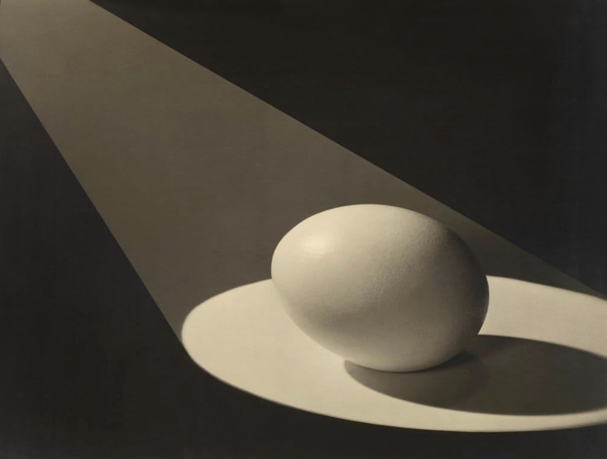
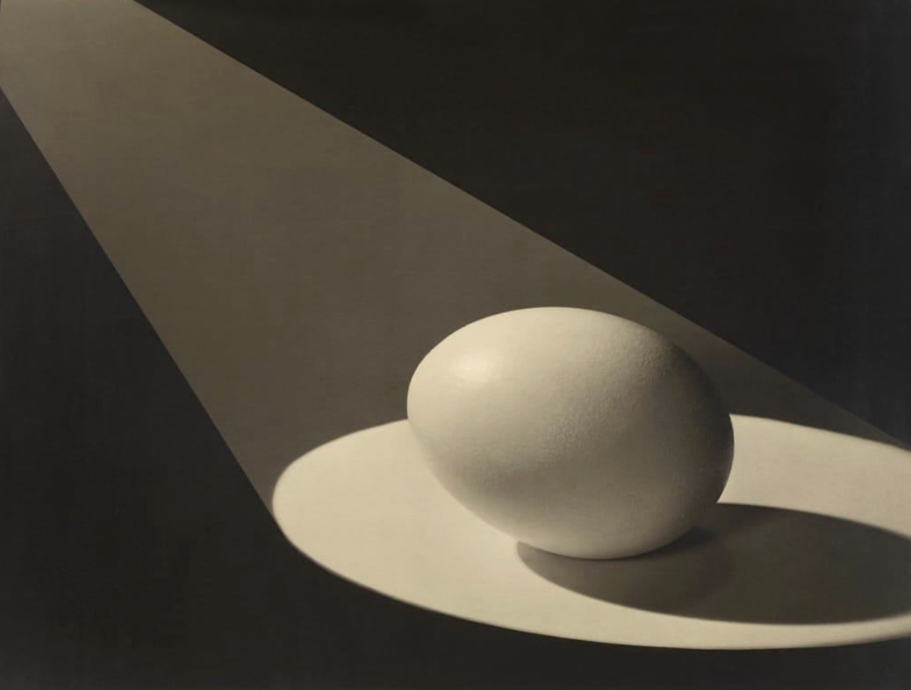

On Eggs
Easter Eggü•ö
It was a mysterious beginning, full of potential —
That is, I was invited to explore “egg” as an ongoing theme in my work and life, and I was feeling excited about the prospect.
 

To start from a beginning, I was born in a town called Normal, Illinois. It’s a beautiful and simple place, with many flat prairies and cornfields nearby. Eventually, I went away from Normal to art school. As a design student at RISD, I discovered the book Super Normal: Sensations of the Ordinary. The book catalogs design objects that are classics but also often anonymous, sharing that “super normal” is located beyond space and time, pointing to a future that has long since begun. In particular, the authors (who are also designers) Naoto Fukasawa and Jasper Morrison mention the goose egg: Seeing the goose egg, we are not surprised by the form at all, but the scale of it warps our perception momentarily, allowing us to see something normal in a new way. There’s nothing wrong with the form of a chicken egg except that we are used to seeing it. Seeing the goose egg, we can enjoy the form as if seeing it for the first time.
In computer programming, an “easter egg” is a hidden or surprise feature — The first easter egg in software took place in a 1980 video game called Adventure. Apparently, the company who made the game, Atari, did not include programmers’ names in the final game credits. To secretly include the credits, one of the game’s programmers covertly programmed some credits into the game. The credit only appears when a player moves over a specific tiny pixel called the “Gray Dot.” Upon discovering the secret credit, Atari initially wanted to remove it. But after realizing it was too costly to remove, the company decided to encourage inclusion of hidden messages in future games, describing them enthusiastically as “easter eggs” for players to find.